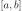
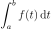
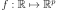
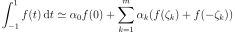
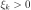
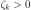
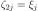
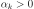
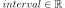
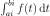

GaussKronrod¶
(Source code, png, hires.png, pdf)
{kind=link}
{kind=link}
- class GaussKronrod(*args)¶
Adaptive integration algorithm of Gauss-Kronrod.
- Parameters
- maximumSubIntervalsint
The maximal number of subdivisions of the interval 
- maximumErrorfloat
The maximal error between Gauss and Kronrod approximations.
- GKRule
GaussKronrodRule The rule that fixes the number of points used in the Gauss and Kronrod approximations.
Notes
The Gauss-Kronrod algorithm enables to approximate the definite integral:

with , using both approximations : Gauss and Kronrod ones defined by:
and:

where , , , and .
The Gauss-Kronrod algorithm evaluates the integral using the Gauss and the Konrod approximations. If the difference between both approximations is greater that maximumError, then the interval is subdivided into 2 subintervals with the same length. The Gauss-Kronrod algorithm is then applied on both subintervals with the sames rules. The algorithm is iterative until the difference between both approximations is less that maximumError. In that case, the integral on the subinterval is approximated by the Kronrod sum. The subdivision process is limited by maximumSubIntervals that imposes the maximum number of subintervals.
The final integral is the sum of the integrals evaluated on the subintervals.
Examples
Create a Gauss-Kronrod algorithm:
>>> import openturns as ot >>> algo = ot.GaussKronrod(100, 1e-8, ot.GaussKronrodRule(ot.GaussKronrodRule.G11K23))
Methods
Accessor to the object's name.
getId()Accessor to the object's id.
Accessor to the maximal error between Gauss and Kronrod approximations.
Accessor to the maximal number of subdivisions of .
getName()Accessor to the object's name.
getRule()Accessor to the Gauss-Kronrod rule used in the integration algorithm.
Accessor to the object's shadowed id.
Accessor to the object's visibility state.
hasName()Test if the object is named.
Test if the object has a distinguishable name.
integrate(*args)Evaluation of the integral of
 on an interval.
on an interval.setMaximumError(maximumError)Set the maximal error between Gauss and Kronrod approximations.
setMaximumSubIntervals(maximumSubIntervals)Set the maximal number of subdivisions of .
setName(name)Accessor to the object's name.
setRule(rule)Set the Gauss-Kronrod rule used in the integration algorithm.
setShadowedId(id)Accessor to the object's shadowed id.
setVisibility(visible)Accessor to the object's visibility state.
- __init__(*args)¶
- getClassName()¶
Accessor to the object’s name.
- Returns
- class_namestr
The object class name (object.__class__.__name__).
- getId()¶
Accessor to the object’s id.
- Returns
- idint
Internal unique identifier.
- getMaximumError()¶
Accessor to the maximal error between Gauss and Kronrod approximations.
- Returns
- maximumErrorvaluefloat, positive
The maximal error between Gauss and Kronrod approximations.
- getMaximumSubIntervals()¶
Accessor to the maximal number of subdivisions of .
- Returns
- maximumSubIntervalsfloat, positive
The maximal number of subdivisions of the interval .
- getName()¶
Accessor to the object’s name.
- Returns
- namestr
The name of the object.
- getRule()¶
Accessor to the Gauss-Kronrod rule used in the integration algorithm.
- Returns
- rule
GaussKronrodRule The Gauss-Kronrod rule used in the integration algorithm.
- rule
- getShadowedId()¶
Accessor to the object’s shadowed id.
- Returns
- idint
Internal unique identifier.
- getVisibility()¶
Accessor to the object’s visibility state.
- Returns
- visiblebool
Visibility flag.
- hasName()¶
Test if the object is named.
- Returns
- hasNamebool
True if the name is not empty.
- hasVisibleName()¶
Test if the object has a distinguishable name.
- Returns
- hasVisibleNamebool
True if the name is not empty and not the default one.
- integrate(*args)¶
Evaluation of the integral of
on an interval.- Available usages:
integrate(f, interval)
integrate(f, interval, error)
integrate(f, a, b, error, ai, bi, fi, ei)
- Parameters
- f
Function, The integrand function.
- interval
Interval,  The integration domain.
- error
Point The error estimation of the approximation.
- a,bfloat
Bounds of the integration interval.
- ai, bi, ei
Point; ai is the set of lower bounds of the subintervals;
bi the corresponding upper bounds;
ei the associated error estimation.
- fi
Sample fi is the set of 
- f
- Returns
- value
Point Approximation of the integral.
- value
Examples
>>> import openturns as ot >>> f = ot.SymbolicFunction(['x'], ['abs(sin(x))']) >>> a = -2.5 >>> b = 4.5 >>> algoGK = ot.GaussKronrod(100, 1e-8, ot.GaussKronrodRule(ot.GaussKronrodRule.G11K23))
Use the high-level usage:
>>> value = algoGK.integrate(f, ot.Interval(a, b))[0] >>> print(value) 4.590...
Use the low-level usage:
>>> error = ot.Point() >>> ai = ot.Point() >>> bi = ot.Point() >>> ei = ot.Point() >>> fi = ot.Sample() >>> value2 = algoGK.integrate(f, a, b, error, ai, bi, fi, ei)[0] >>> print(value2) 4.590...
- setMaximumError(maximumError)¶
Set the maximal error between Gauss and Kronrod approximations.
- Parameters
- maximumErrorvaluefloat, positive
The maximal error between Gauss and Kronrod approximations.
- setMaximumSubIntervals(maximumSubIntervals)¶
Set the maximal number of subdivisions of .
- Parameters
- maximumSubIntervalsfloat, positive
The maximal number of subdivisions of the interval .
- setName(name)¶
Accessor to the object’s name.
- Parameters
- namestr
The name of the object.
- setRule(rule)¶
Set the Gauss-Kronrod rule used in the integration algorithm.
- Parameters
- rule
GaussKronrodRule The Gauss-Kronrod rule used in the integration algorithm.
- rule
- setShadowedId(id)¶
Accessor to the object’s shadowed id.
- Parameters
- idint
Internal unique identifier.
- setVisibility(visible)¶
Accessor to the object’s visibility state.
- Parameters
- visiblebool
Visibility flag.